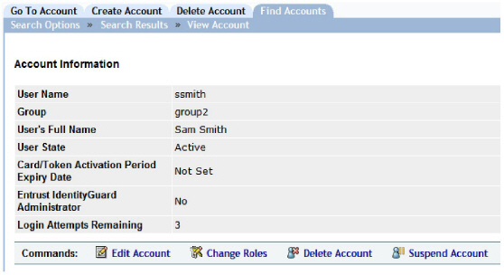
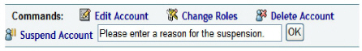

|
IdentityGuard Server 11.0 Administration Guide |
|
IdentityGuard Server 11.0 Administration Guide |
There are two possible states for a user:
● In the Active state, a user can authenticate to Entrust IdentityGuard using the authentication methods and credentials assigned. Active is the default state set when you create a user.
● In the Suspended state, user’s authentication credentials are valid but authentication to Entrust IdentityGuard is blocked. The Suspended state remains until an administrator changes the state setting.
You can suspend users explicitly using the Administration interface; see To suspend or activate a user. Users will also be suspended if their account in your LDAP repository is disabled or expired, if you have this feature configured. See Add a new LDAP repository.
When you suspend users, their accounts remain active but they cannot log in using Entrust IdentityGuard. Suspend users when:
● they temporarily leave your organization (for example, on holidays)
● you suspect their accounts may be compromised
Note: Suspension is a temporary state, and a suspended user takes up a user license just as an active user does. If you want to remove an account permanently (because it is compromised or because the user has left your organization), delete the user account. See Deleting users.
You can also suspend administrators. To suspend multiple users or administrators at once using a bulk operation, see To manage multiple users with bulk operations.
1. Log in to the Entrust IdentityGuard Administration interface as the administrator.
 On the
Windows computer where Entrust IdentityGuard is installed
On the
Windows computer where Entrust IdentityGuard is installed
2. In the main menu, click User Accounts.
The User Accounts page appears.
3. Find a specific user in one of two ways:
● use the Go To Account tab (see To search for information about one user)
● use the Find Accounts tab (see To search for information about one or more users)
The View Account page appears with account and authentication information for the specific user.

4. Click Suspend Account.
The Suspend Account text box appears.

5. Type the reason for suspending this user.
6. Click OK or press Enter while the cursor is still in the text field.
After you have suspended the user, Suspend Account is replaced by Activate Account.